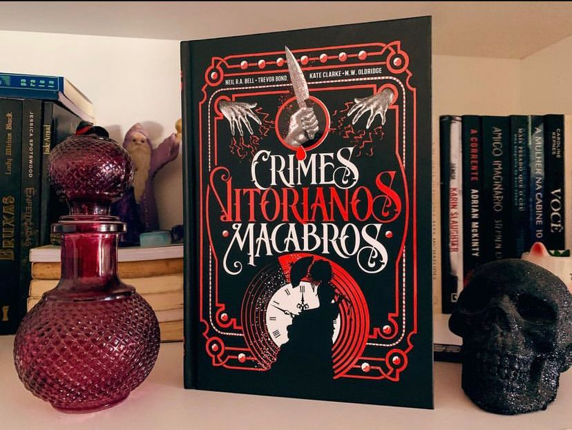

Crimes Bitorianos Macabros
(Kate Clarke, M.W. Oldridge, Neil R.A. Bell e Trevor Bond - Darkside)
⭐⭐⭐⭐⭐
⚠️Gatilhos: Assassinato, Violência Explícita, Mutilação.
Lançamento da Darkside, Macabra e Crime Scene se encontram e entregam aos leitores casos reais que ocorreram na era vitoriana. Eu preciso adiantar que o livro está de matar ! Hahaha
Crimes Vitorianos Macabros, quatro renomados historiadores do tema revelam as realidades terríveis desse aspecto da vida vitoriana, oferecendo um perfil não apenas dos criminosos e suas vítimas, mas também de policiais, cientistas forenses e outros que mergulharam nas densas sombras do século XIX. Aqui vamos ver casos super famosos como Jack, o estripador - Amelia Dyer, a “criadora de bebês” entre outros.
A obra é muito boa e da para ver a profunda pesquisa feita. Vamos perceber ao longo do livro que se hoje com toda tecnologia já pode ser complicado pegar um assassino, imagina no Século XIX… não havia tecnologia e a polícia tinha que encontrar outros meios para solucionar os casos e nós sabemos que nem todos tiveram uma resolução - Jack, o estripador que o diga, até hoje sua identidade é desconhecida. A edição está linda como todo livro da Darkside, tudo impecável. Aos fãs de true crime, crimes de época e investigação será um deleite.